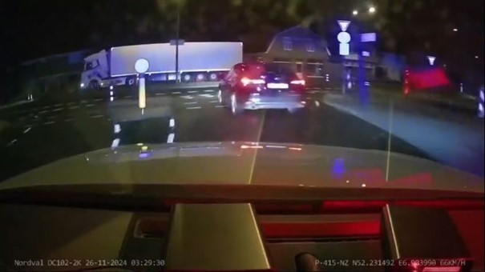

Politie Achtervolging in Enschede
Opmerkelijke Beelden van de Achtervolging
De politie heeft opvallende beelden gedeeld van een achtervolging die gisterochtend in Enschede plaatsvond.
Op de beelden is te zien dat de achtervolgde auto van achteren wordt geramd door de politieauto, waarna de verdachte wagen de andere weghelft op rijdt en ternauwernood door een vrachtwagen wordt ontweken. Niet veel later eindigt de achtervolging abrupt wanneer de politieauto frontaal botst op de auto van de verdachte.
De verdachte bleef ongedeerd en sprong uit de auto, maar werd even later opgepakt. De beelden hebben veel vragen opgeroepen, vooral gezien de snelheid en het drukke stadsverkeer in Enschede.
De Achtervolging en de Diefstal
De achtervolging begon maandagavond, toen een auto werd gestolen in Utrecht. De eigenaar van de auto ontdekte de diefstal snel en waarschuwde de politie. Deze slaagde erin de gestolen auto te lokaliseren in de buurt van Apeldoorn. De bestuurder negeerde echter twee keer het stopteken en zette de vlucht voort. De politie van de landelijke eenheid zette de achtervolging in, waarbij snelheden werden bereikt van 190 km/u.
De Gevaren van de Achtervolging in Stadsverkeer
De beelden tonen de achtervolging door het drukke stadsverkeer van Enschede, waar veel ander verkeer aanwezig was. De hoge snelheid en gevaarlijke manoeuvres roepen vragen op over de veiligheid van omstanders en de rol van de politie in dergelijke situaties.
Wat Gebeurde Er Aan Het Einde?
Uiteindelijk eindigde de achtervolging toen de politieauto frontaal op de gestolen wagen botste. Gelukkig bleven zowel de verdachte als de agenten ongedeerd. De verdachte werd snel aangehouden, en hoewel de beelden schokkend zijn, laten ze zien hoe de politie handelt in dergelijke gevaarlijke achtervolgingen.
Meer Over de Gevallen Incidenten
Gisteren werd al bekend dat er een auto in Enschede na een lange achtervolging was gecrasht. Tegelijk met de beelden van de achtervolging deelt de politie meer details over de situatie, waaronder de oorsprong van de gestolen auto en de snelheid van de achtervolgingen.
Bekijk de Dashcam Beelden
Bekijk hier de indrukwekkende dashcambeelden van de achtervolging in Enschede:

Dashcambeelden van de Achtervolging
De politie heeft nieuwe beelden gedeeld van de laatste momenten van een achtervolging van meer dan 75 kilometer tussen Apeldoorn en Enschede. De verdachte, een 24-jarige man uit Polen, probeerde te vluchten in Enschede, maar werd uiteindelijk opgepakt met behulp van een politiehond. De man wordt vastgehouden op verdenking van heling.
De politie heeft aangekondigd nog meer beelden van de achtervolging in Enschede te zullen delen.
De Tragische Gebeurtenissen in Berghem
In een ander incident, bij een achtervolging in Berghem, nabij Oss, kwamen gisteren twee mannen om het leven. Ook zij bevonden zich in een gestolen auto. Het fatale ongeluk gebeurde toen de verdachten over een spoorwegovergang reden en door een passagierstrein werden geschept. Gelukkig bleef iedereen in de trein ongedeerd.
Wat Gebeurde Er In Enschede?
De achtervolging in Enschede begon toen de gestolen auto, gealarmeerd door de eigenaar, werd opgespoord door de politie. Na een lange achtervolging die snelheden tot 190 km/u bereikte, eindigde de vlucht in de stad. De verdachte werd daarna snel aangehouden.